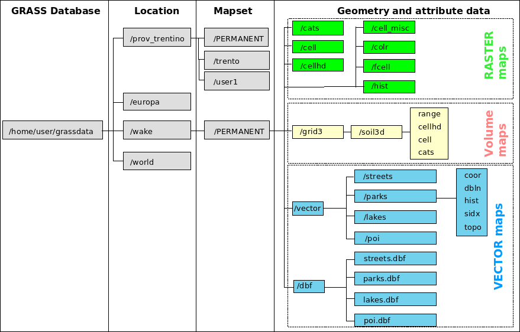

GRASS Quickstart
Geographic Resources Analysis Support System
Commonly referred to as GRASS, this is a Geographic Information System
(GIS) used for geospatial data management and analysis, image
processing, graphics/map production, spatial modelling, and
visualization. GRASS is currently used in academic and commercial
settings around the world, as well as by many governmental agencies
and environmental consulting companies.
1. Startup of GRASS GIS
![[GRASS start screen]](grass_start.png)
![[(1)]](circle_1.png) Selecting the GIS Database directory
Selecting the GIS Database directory
GRASS data are stored in a directory referred to as DATABASE
(also called "GISDBASE"). This directory has to be created
with a file manager or the mkdir command, before starting to work
with GRASS. Within this DATABASE, the projects are organized
by project areas stored in subdirectories called LOCATIONs.
![[(2)]](circle_2.png) Selecting the LOCATION (a project)
Selecting the LOCATION (a project)
A LOCATION is defined by its coordinate system, map projection and
geographical boundaries. The subdirectories and files defining a
LOCATION are created automatically when GRASS is started the first
time with a new LOCATION. It is important to understand that each
projection stays in its own LOCATION.
See ![[(4)]](circle_4.png) the "Location Wizard" to
easily create a new LOCATION from scratch from a geocoded file, by
defining the parameters or by selecting the corresponding EPSG projection
code.
the "Location Wizard" to
easily create a new LOCATION from scratch from a geocoded file, by
defining the parameters or by selecting the corresponding EPSG projection
code.
![[(3)]](circle_3.png) Selecting the MAPSET (a subproject)
Selecting the MAPSET (a subproject)
Each LOCATION can have many MAPSETs. Each MAPSET is a LOCATION's
subdirectory. New MAPSET can be added at GRASS startup (see related
button).
Location Wizard
The "Location Wizard" let's you easily create a new LOCATION. You
will be guided through a series of dialogues to browse and select
predefined projections (also via EPSG code) or to define individual
projections. Find below some rules to define the default raster
resolution for a new LOCATION.
![[(5)]](circle_5.png) Start GRASS
Start GRASS
Once you have selected an existing LOCATION/MAPSET or defined a new
one, you can enter GRASS. The graphical user interface
wxGUI will open and provide you with a
menu system, map visualization tool, digitizer, and more.
2. Background GRASS Location structure

Fig. 1: GRASS Location structure
A LOCATION is simply a set of directories which contains the GRASS
data of a project. Within each LOCATION, a mandatory "PERMANENT"
MAPSET exists which contains projection information and some
more definitions. It can be used to store the base cartography
in it as "PERMANENT" is visible to all users accessing a LOCATION.
Creating and maintaining MAPSETs
One motivation to maintain different MAPSETs is to store maps
related to project issues or subregions. Another motivation is to
support simultaneous access of several users to the map layers
stored within the same LOCATION, i.e. teams working on the same
project. For teams a centralized GRASS DATABASE would be defined
in a network file system (e.g. NFS). Besides access to his/her own
MAPSET, each user can also read map layers in other users' MAPSETs,
but s/he can modify or remove only the map layers in his/her own
MAPSET.
You can learn more about mapsets and how to seamlessly access maps
found in another MAPSET of the same LOCATION in the
g.mapsets documentation.
The role of the "PERMANENT" LOCATION
When creating a new LOCATION, GRASS automatically creates a special
MAPSET called PERMANENT where the core data for the project can be
stored. Data in the PERMANENT MAPSET can only be added, modified or
removed by the owner of the PERMANENT MAPSET; however, they can be
accessed, analyzed, and copied into their own MAPSET by the other
users. The PERMANENT MAPSET is useful for providing general spatial
data (e.g. an elevation model), accessible but write-protected to all
users who are working in the same LOCATION as the database owner.
To manipulate or add data to PERMANENT, the owner would start
GRASS and choose the relevant LOCATION and the PERMANENT MAPSET. This
mapset also contains the DEFAULT_WIND file, which holds the default
region boundary coordinate values for the location (which all users
will inherit when they start using the database). Additionally, in
all mapsets a WIND file is kept, for storing the current boundary
coordinate values and the currently selected raster resolution. Users
have the option of switching back to the default region at any time.
3. Creating a GRASS database with sample data
To create the GRASS database:
- Find a place on your disk where you have write access and that
has enough diskspace to hold your spatial data.
- Create a subdirectory that will hold the general GRASS database
(e.g. using a file manager or with mkdir /data/grassdata or
mkdir /home/yourlogin/grassdata).
Sample data such as the "Spearfish" or the "North Carolina" sample datasets
may be downloaded from
http://grass.osgeo.org/download/data.php
and placed in this new database directory.
A) Create New Location with wxGUI
The wxGUI graphical user interface provides a
graphical "Location Wizard" instead which let's you easily create a
new LOCATION. You will be guided through a series of dialogues to
browse and select predefined projections (also via EPSG code) or to
define individual projections. The rules to define the resolution as
described above also apply here.
B) Create New Location with text screen
Click on the "Create New Location" button, which will take you to a
text screen on which you can enter a new location name, and then
continue by pressing "ESC"-"RETURN" - i.e. press (NOT hold) the ESC key,
and then press the RETURN key on your keyboard.
Next you will need to assign parameters to the location such
as the coordinate system and datum you want to use, the project area's
boundary coordinates, and the default resolution for raster data:
- Start by chosing between, X,Y, Latitude-Longitude, UTM, or
"other" coordinate system. This choice depends on your data and the
use you will make of it.
- You are then prompted for a single line of text describing the
project area, for example "Topo Map of the Alps".
Next you are requested for some more information about the projection.
Note that the prompts vary from projection to projection, an example follows:
- (if you chose "D - Other Projection") "specify projection name":
"list" gives you the list of all available projections, examples are
"tmerc" for Transverse Mercator, "lcc" for Lambert Conformal Conic,
"moll" for Mollweide, etc.
- specify datum name: again use "list" to get a list of available
datums, examples are "wgs84", "nad27", "eur79", etc.
- Enter Central Parallel: 0 if you want the Equator as the
central parallel
- Enter Central Meridian: 0 if you want the Greenwich meridian as
central meridian
- Enter Scale Factor at the Central Meridian
- Enter plural form of map units: for example, meters
The next step is the description of the project area's boundary coordinates
and the definition of the default raster resolution:
The default raster resolution (GRID RESOLUTION) has to be chosen
according to your needs. Generally, it is advisable to work in steps of
0.25 (0.25, 0.5, 1.75, 2.00, 12.25 etc.). This resolution does not
concern vector and site data since these are stored with their exact
coordinate values. Note that every raster map may have its own
resolution. You can leave this screen with "ESC"-"RETURN" and then
if everything is correct accept the list of parameters that appears.
You will then be back to the startup screen to enter the mapset's
name (if not already entered). Another "ESC"-"RETURN" will finally
let you leave this screen. This mapset is created within the new
location by answering "yes" to the next question. The mapset will
use the parameters of the location (such as the region and resolution
definitions) as its default parameters.
Now the project area, i.e. the location including a mapset, has been
created. You have "arrived" in the GRASS system and can start working
within this new location.
Further Reading
Please have a look at the GRASS web site for tutorials and books:
http://grass.osgeo.org/gdp/index.php.
See also
GRASS 7 Reference Manual
Manual page of GRASS 7 launch program
Last changed: $Date$
Help Index
© 2005-2010 GRASS Development Team